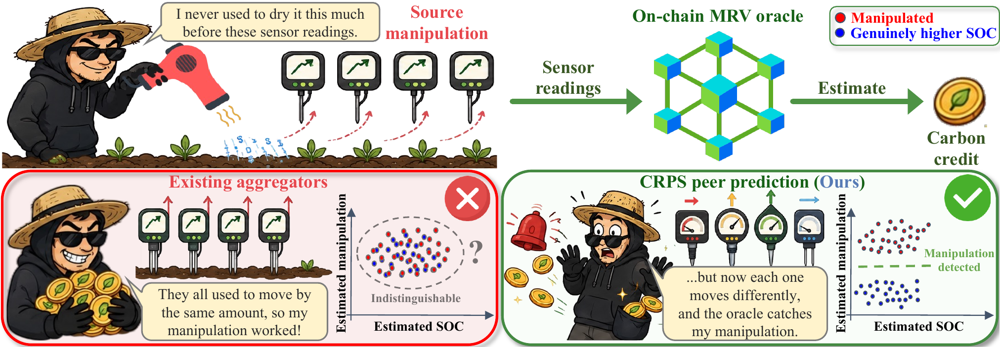
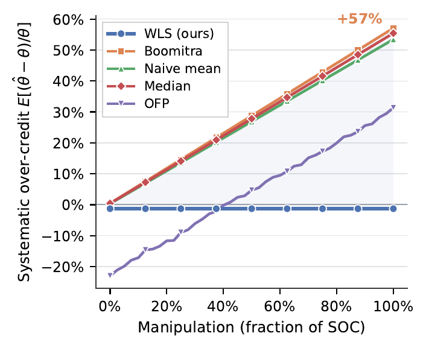
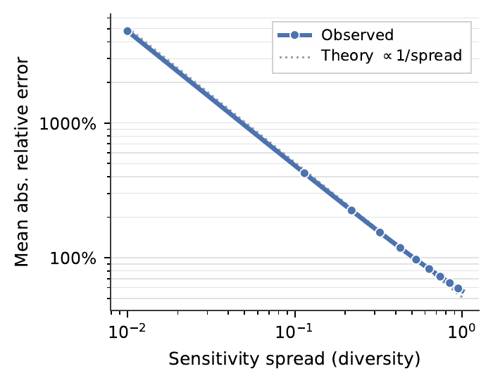
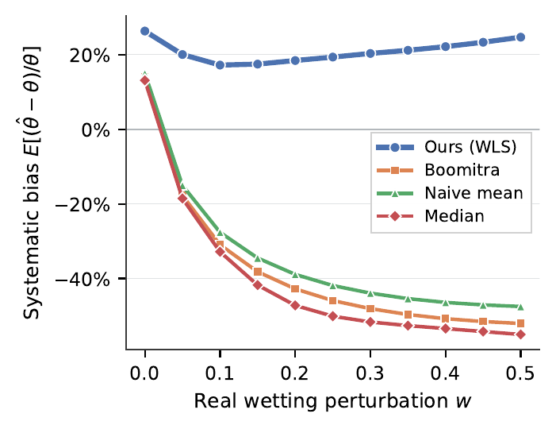

MARBLE 2026 · Mathematical Research for Blockchain Economy · under review
Manipulation‑Resistant Oracles via Continuous Peer Prediction
1Department of Computing, Imperial College London, UK 2European Research & Development Centre, Hitachi Europe Ltd., UK 3Department of Finance, Business School, Imperial College London, UK 4Centre for Climate Finance and Investment, Imperial College London, UK

Abstract
Blockchain oracle networks, including decentralised physical infrastructure networks (DePINs), report physical measurements from a source that can manipulate the underlying process. A carbon project operator, for example, can dry the soil to raise its apparent soil organic carbon (SOC) and earn credit for carbon it never stored. Existing peer prediction mechanisms cover discrete signals under a strategic source, or continuous probabilistic reports under an honest source, but not continuous reports under a strategic source. We close this gap for Gaussian reports with continuous ranked probability score (CRPS) peer scoring that makes truthful reporting a strict equilibrium under a flat prior. Our main result is an if-and-only-if characterisation: report-based rules identify and deter source manipulation precisely when the sensors are diverse (when their types respond differently to the same manipulation). When diversity fails, no report-based mechanism can deter the source, whatever its scoring or penalty. A uniform shift of every report mimics a genuine rise in SOC and, by CRPS translation equivariance, leaves every peer score unchanged. With eight SOC models calibrated on 37,280 real European soil spectra, baseline aggregators over-credit by up to 57% under manipulation, whereas the mechanism stays unbiased and sizes a closed-form on-chain stake. As a deterministic function of the reports, it runs on a DePIN as a smart contract that issues credits and slashes the source stake without a trusted aggregator. The credited value still carries the sensor's calibration error, so the guarantee is manipulation invariance rather than absolute accuracy.
Findings



How it works
- Report. Each sensor i submits a Gaussian belief N(mi, vi) about the parcel's SOC. Its mean responds to a manipulation s through a measured sensitivity αi.
- Score. Each sensor is paid the negative closed-form Gaussian CRPS of its forecast against its peers' reports. CRPS is strictly proper, so the truthful mean and variance are the unique best response; no ground truth is ever needed.
- Read out. Weighted least squares on the design [1 | α] separates the estimate θ̂ from the manipulation ŝ. Credits are issued on θ̂; the source's stake is slashed when ŝ clears a 5% false-alarm threshold. Both are deterministic in the reports, so the whole round runs as a smart contract.
Citation
@misc{song2026manipulation,
author = {Song, Junhao and Rolandi, Tanis and Novocky, Adam and
Biffis, Enrico and Knottenbelt, William},
title = {Manipulation-Resistant Oracles via Continuous Peer Prediction},
year = {2026},
note = {Under review}
}